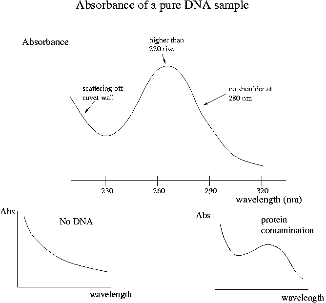

Day 9 Morning Lecture Notes
Steve Williams, Smith College
June 14, 2004

The concentration of DNA = (spec reading at 260 nm)X(50 µg/nL) assuming a 1 cm path length. For a high-quality DNA sample, 1.6 <= (Abs260/Abs280) <= 1.9. A higher ratio typically indicates RNA contamination while a lower ratio typically indicates protein contamination. The former can be treated with RNAse while the latter should be be addressed using a second phenol-chisam extraction and dialysis. Note that temperature and pH don't affect spectrophotometry results unless the DNA actually denatures.
If RNA is degraded but not separated, (Abs260/Abs280) will be large due to absorption by free nucleotides. Always run DNA on a gel when doing spectrophotometry just to make sure no obvious contamination shows up. Lipids also absorb strongly at 260 nm and can give a false impression of concentrated DNA. Contamination with cell debris from NaOH+SDS lysis also calls a low (Abs260/Abs280) reading.
Chisam (chiz-um) is used to eliminate phenol from the DNA sample. Dialysis gets rid of chisam. For a 50-100 µL sample, 3 hours of dialysis is fine. Larger volumes will require longer dialysis times. Ligation is especially sensitive is particularly sensitive to phenol/chisam and requires a thorough analysis.
DNA fingerprint analysis looks at "short tandem repeats." LINE1 is 7 kbp long and is a long tandem repeat of which RevT is 1.4 kbp. A STR unit on the other hand is 4-7 bp long. An example is D18S51 which is (AGAA)n where n = number of repeats. D18S51 is found on chromosome 18, arm 1, band 21.3 at the locus called 18q21.3. At this locus the STR has 68 to 85 repeats. The variability in n means that the STR locus is "polymorphic." Not all STR loci in the human genome are polymorphic. Another example of a polymorphic STR is D5S818 which has sequence (AGAT)n and has 34 to 43 repeats at locus 5q21.31.
The length of STR sequences varies over evolutionary time but is stable in an individual's cells. Usually the length of these repeats doesn't vary from parents to offspring. Biochemical experiments in vitro have shown that DNA polymerase does make more errors in copying STRs, which tend to be AT-rich.
A typical DNA fingerprinting experiment will use 10 loci. The pattern of 10 loci will be repeated only once on average in every 82 billion people. The distribution of STR lengths is not random and varies in populations around the world. The technique used in Experiment 5 is called AmpFl STR Profiler Plus from Applied Biosystems.
DNA fingerprinting is used by immigration services to see if claimants are really close relatives. It also can be used in paternity tests. The method works well with degraded DNA from crime scenes since the sequences of interest are short and therefore unlikely to be degraded.
The PCR used in fingerprinting uses primers that hybridize upstream to conserved sequences on either side of the STR. One of the the primers is fluorescently labeled. Fluorescently labeled primers give more efficient amplification than fluorescently labeled nucleotides. The labels affect the Tm of primers only by a couple of degrees. Fluorescently labeled primers result in only one dye molecule per product as opposed to many for labeled dNTPs, so the resulting DNA also runs better on dyes. The PCR product is a labeled STR with some additional material on either side.
Of the 10 STRs we will run in Experiment 5, one differs between men and women. The other 9 are polymorphic. The PCR will be multiplex with 10 pairs of primers. The choice of the primers is tricky since they must have nearly the same Tm, must not hybridize with one another and must not form hairpins.
Because STRs are on different chromosomes, the patterns are separately inherited during egg fertilization. If the father has (A,B) values of n for a given STR repeat number and the mother has (C,D), the children can have (A,C), (A,D), (B,C) or (B,D) and should be different from one another. Individuals may be heterozygous or homozygous for STR lengths on different chromosomes. Being homozygous means that the parents have the same STR length. Parents and children have 1/2 their STR lengths in common; cousins should be 1/4 the same, etc.
Up Previous Next